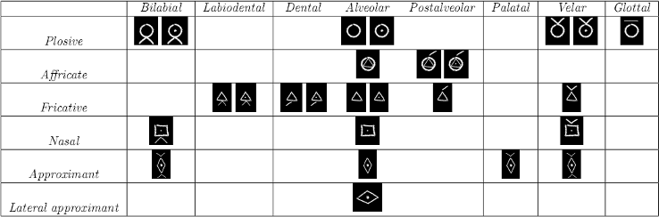

Hinted at by the title and by the phrase oral tradition, solvers must determine that the code depicted is an IPA cipher. The code deciphers to reveal a subset of John Hodgman’s list of 700 hobos from his book Areas of My Expertise in numerical order. By taking the difference between the numbers of subsequent hobos and converting those numbers alphanumerically into letters, solvers receive the message PLEASE READ JOHN HODGMAN’S FRIDAY BLOG POST. On the first day of the Mystery Hunt, John Hodgman (will have) posted a blog entry on his web site (http://areasofmyexpertise.com). In his trademark style, Hodgman has capitalized several words in his blog post, spelling the secret message THE ANSWER IS BUSINESS TRAVELERS.